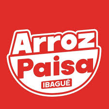

El logo viene en JPG con fondo rojo, y ese rojo NO es el mismo de la barra de la app. Puesto tal cual se vería un parche cuadrado de otro tono.
Aquí se le quita el fondo dejando solo el dibujo blanco, con transparencia. Así se puede poner sobre cualquier rojo y se ve como parte de la barra.
